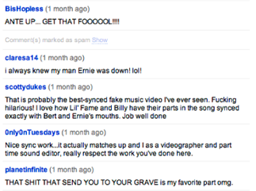
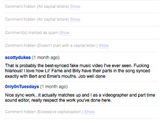

Comment Snob is an extension for Google Chrome that filters out undesirable comments from comment threads on the Web. You can install it here.
| Before: | After: |
|  |  |
It comes with support for YouTube by default, but you can add support for many other sites by installing Comment Snob rules. For each rule that you install, you can choose from the following filtering parameters:
There are two ways to install a comment snob rule:
Are you familiar with HTML and jQuery? Then you can write Comment Snob rules for any website you want.
A Comment Snob rule is a JSON object that tells Comment Snob how to find comments on a website and where to place the "Show/Hide" toggle for each comment. These are the properties that each rule should (or can) have; all selectors should be written for consumption by jQuery:
| Attribute | Required | Description |
|---|---|---|
| id | Yes | A string that should be unique to your rule. This is used to make sure that the same rule is not installed multiple times. |
| label | Yes | A string that describes your rule to a user. It will usually be the name of the website that it filters. |
| url | Yes | A regular expression (encoded in a string) that describes the URLs for which your rule should be run. |
| allCommentsSelector | Yes | A selector that selects the smallest possible container that contains all of the comments for the page. |
| commentContainerSelector | Yes | A selector that selects the largest possible container that contains only a single comment, using allCommentsSelector as a starting point. |
| commentTextSelector | Optional | A selector that selects the smallest possible container that contains all of the text for a comment, using commentContainerSelector. If not specified, defaults to commentContainerSelector. |
| commentHideSelector | Optional | A selector that selects any nodes that should be hidden when a comment is filtered, using commentContainerSelector as a starting point. If not specified, commentTextSelector will be used. |
| statusElementTag | Optional | The HTML tag name that should be used to hold the "Show/Hide" toggle and the reason for filtering. If not specified, defaults to "span". |
| statusContainerSelector | Optional | A selector that selects the element that will be used as a point of reference for where the "show/hide" toggle and filtering reason is placed for each comment. If not specified, defaults to commentContainerSelector. |
| statusPlacement | Optional | One of "prepend", "append", "before", or "after"; used along with statusContainerSelector to insert the filtering status into each filtered comment. Defaults to "prepend". |
| statusElementAttributes | Optional | A hash containing name/value pairs for attributes that can be added to the placeholder element specified by statusElementTag. |
| ajaxInitiatorSelector | Optional | A selector that selects any UI elements that might be clicked to trigger loading more comments via AJAX, using allCommentsSelector as a starting point. |
| dynamic | Optional | A boolean value (defaults to false) that indicates whether the website's comments are not included in the main pageload, but are immediately loaded after the page loads. Disqus is the most common example of this. |
| updateURL | Optional | A URL where the JSON for this rule can be retrieved (for automatic updates). |
| author | Optional | Your name, email address, or website. |
| description | Optional | A text description of your rule, only recommended if the label doesn't fully describe the functionality. |
The simplest possible rule might look like this:
{
"id": "test@example.com",
"label": "Example.com",
"url": "^http://example\\.com/",
"allCommentsSelector": "#comments",
"commentContainerSelector": ".comment"
}
To let users install your rule, just link to a file containing only the JSON, and give the <a> tag a "comment-snob-rule" class:
<a href="http://www.chrisfinke.com/comment-snob/rules/hn.snob" class="comment-snob-rule">Comment Filter for Hacker News</a>
(You could also include the JSON in the href attribute directly as a data URI.)
Users can also install rules by opening a JSON file whose filename ends in ".snob" directly in the browser.
E-mail me at cfinke@gmail.com.